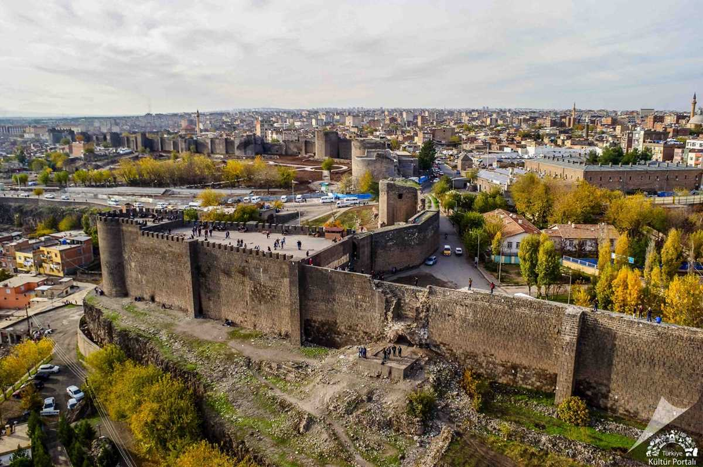
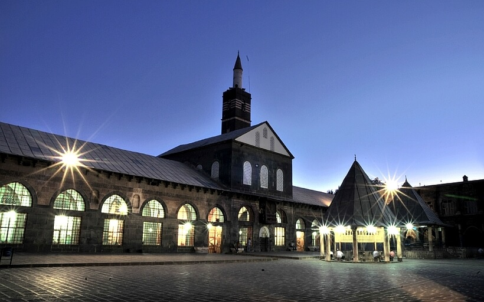
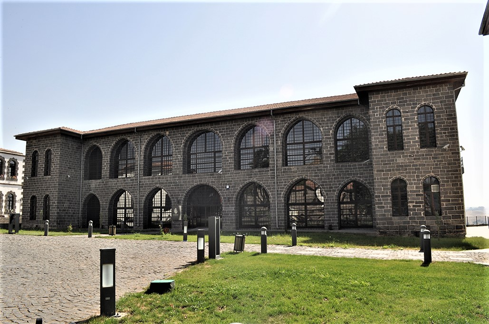
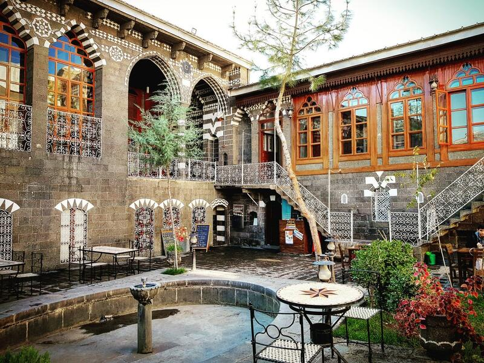

Diyarbakır Kültürel Yerler
Kadim Şehrin Kültürel Mirası
Tarihi Yapılar

Diyarbakır Surları
UNESCO Dünya Mirası Listesi'nde yer alan, dünyanın en uzun surlarından biri.

Ulu Cami
Anadolu'nun en eski camilerinden biri.

Hasankeyf
12.000 yıllık tarihi ile medeniyetlerin beşiği.
Müzeler

Diyarbakır Arkeoloji Müzesi
Bölgenin zengin arkeolojik mirasını sergileyen müze.

Cahit Sıtkı Tarancı Müzesi
Ünlü şairin yaşadığı ev ve kişisel eşyaları.